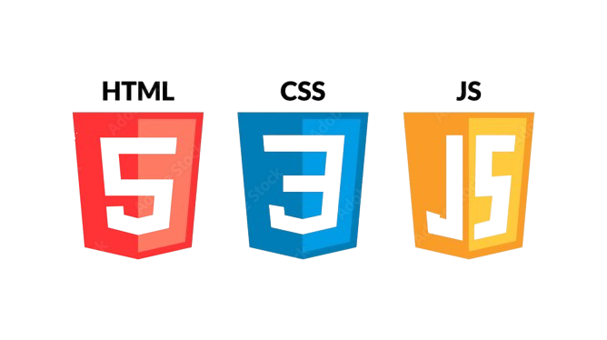

Our Experience and What We Can Do!
We are Group 12, a team of five students working on building dynamic portfolios and mastering frontend development tools. Below is a brief introduction to each of us:
Abdulahi A
Abdulahi A specializes in creating clean and responsive layouts using HTML and CSS. He focuses on accessibility and user-friendly design, ensuring every website he works on is well-structured and mobile-responsive.
Abdulahi F
Abdulahi F excels in interactive design, working with JavaScript to enhance user experiences. His attention to detail in functionality ensures smooth, dynamic, and intuitive web applications.
Abubakar
Abubakar is a master of UI/UX design and layout implementation. Using HTML, CSS, and frameworks like Bootstrap, he creates sleek, modern websites that are visually appealing and easy to navigate.
Ahmed
Ahmed is passionate about web animations and advanced CSS techniques. His work focuses on creating eye-catching visuals and effects that improve the overall user experience, primarily using CSS and JavaScript libraries like GSAP.
Ilyas
Ilyas is the backend integration expert of the group. While also skilled in frontend development, his ability to connect the frontend to APIs using JavaScript and AJAX helps create fully functional and interactive web applications.
Development Tools We Use
- 